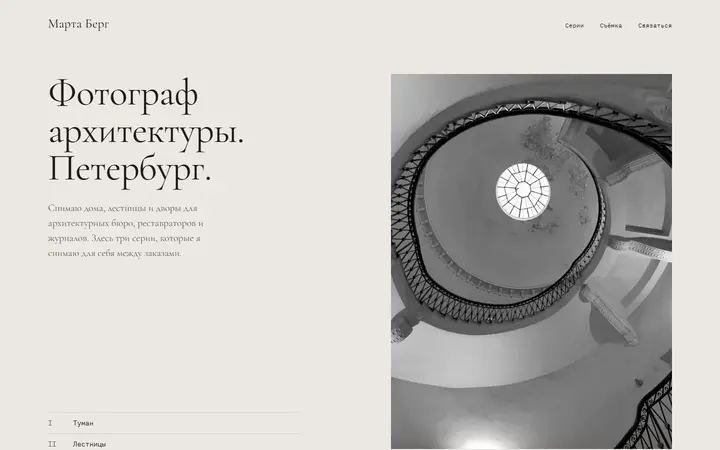
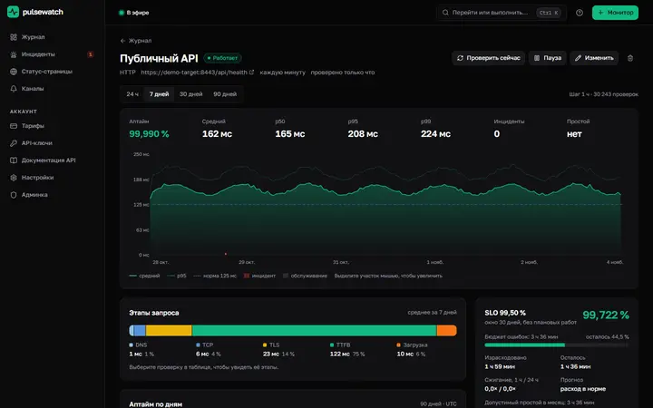
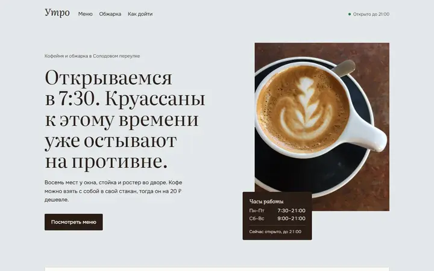
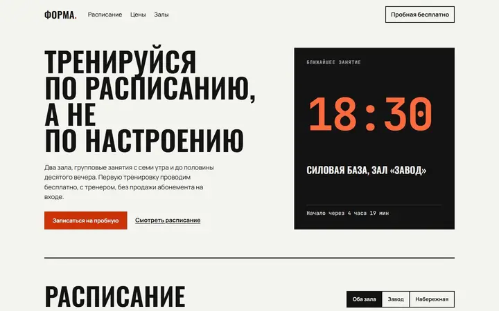
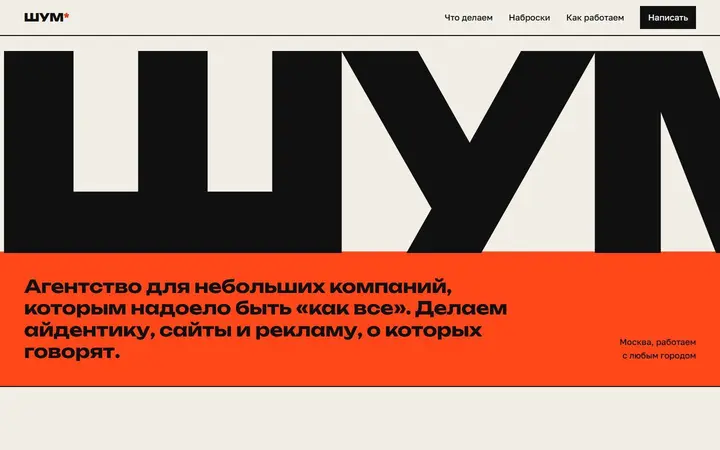
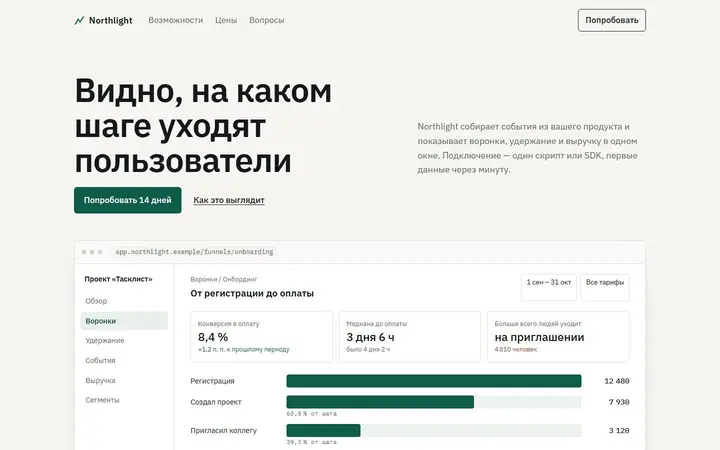

Сайт фотографа архитектуры
Марта Берг
Три серии снимков Петербурга, подписи как в каталоге выставки, просмотр в полный размер. Интерфейса почти не видно, главное — кадры.
Пишу код сам, показываю его целиком: у каждой работы ниже есть живая версия и репозиторий. Отвечаю с 10 до 22 по Москве, обычно в течение часа.
Сейчас
Мониторинг сайтов, API и сертификатов из нескольких регионов. Инцидент открывается только после подтверждения сбоя большинством регионов, уведомления уходят в Telegram, почту и Slack, у каждого проекта есть публичная статус-страница.
FastAPI · PostgreSQL · React · Docker

Пять концептов для придуманных заказчиков, у каждого своё направление. Всё на HTML, CSS и немного JavaScript, Lighthouse 96–100.

Сайт фотографа архитектуры
Три серии снимков Петербурга, подписи как в каталоге выставки, просмотр в полный размер. Интерфейса почти не видно, главное — кадры.

Лендинг кофейни
Меню свёрстано как печатный лист, табличка с часами пишет, открыто ли сейчас, вместо виджета карт — нарисованная схема квартала.

Сайт фитнес-клуба
Расписание на неделю открывается на сегодняшнем дне, фильтруется по залу, табло показывает ближайшее занятие.

Сайт агентства
Крупная типографика и плакаты на CSS вместо выдуманных кейсов. Единственный проект, где можно было позволить себе дерзость.

Лендинг SaaS-сервиса
Экраны продукта свёрстаны вручную: воронка, когорты удержания, живая лента событий. Тарифы таблицей и FAQ.
MCP-серверы подключают Claude Desktop к программам на компьютере: он сам вызывает нужные инструменты и работает с файлами, а не только советует.
Пишете «сделай визитку 90×50 с логотипом слева» — Claude создаёт документ, фигуры, текст, импортирует картинки и выгружает в PDF, PNG или SVG. 15 инструментов через COM, работает с установленным CorelDRAW.
Остатки, обороты, документы за период, справочники через OData. Записать ничего нельзя: клиент отбрасывает любой запрос кроме GET ещё до отправки.
Отчёт из Markdown в docx, таблица с формулами и настоящей диаграммой Excel, презентация, экспорт в PDF через установленный Office. 21 инструмент.
Поиск, новости и картинки через DuckDuckGo, страницы отдаются чистым Markdown, до 20 страниц параллельно.
Симметрия, координация, порошковая дифрактограмма, поверхности по индексам Миллера, поиск в Crystallography Open Database и открытие в VESTA.
Следит за товарами по артикулу WB или по CSS-селектору на странице магазина, хранит историю, строит графики, выгружает в Excel и пишет в Telegram, когда цена падает.
Каталог, корзина, оформление заказа с проверкой телефона, история заказов и уведомление администратору. Есть демо-режим без настоящих платежей.
Цену называю после того, как прочитаю задачу: она зависит от объёма, а не от названия услуги.
Как работаю: вы описываете задачу, я задаю вопросы и называю срок и цену. Предоплата половина, остальное после сдачи. Правки в течение двух недель после сдачи бесплатно.
Напишите в Telegram, что нужно сделать и к какому сроку. Можно без технического задания, разберёмся вместе.